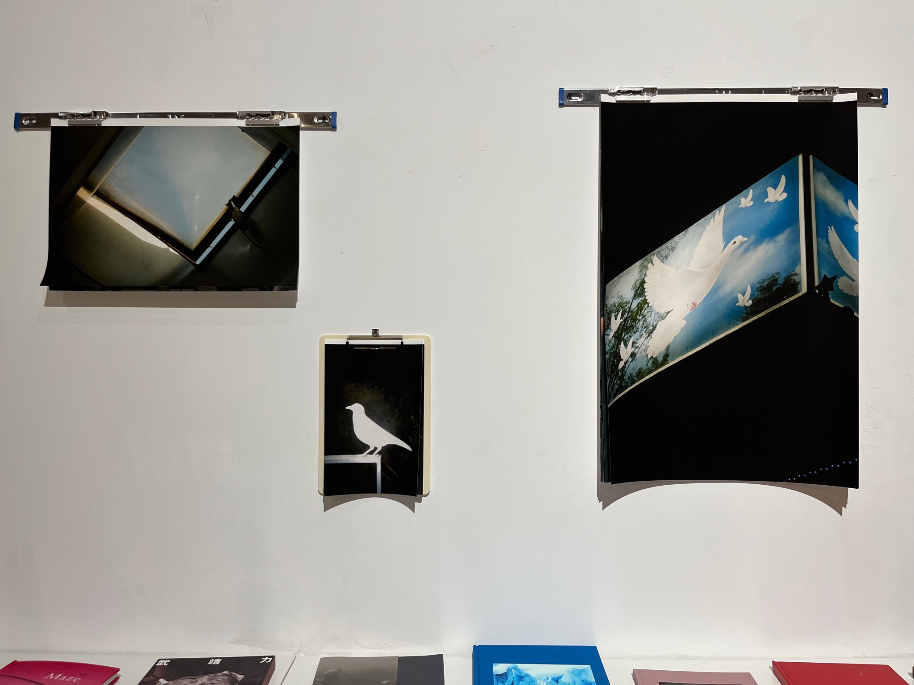
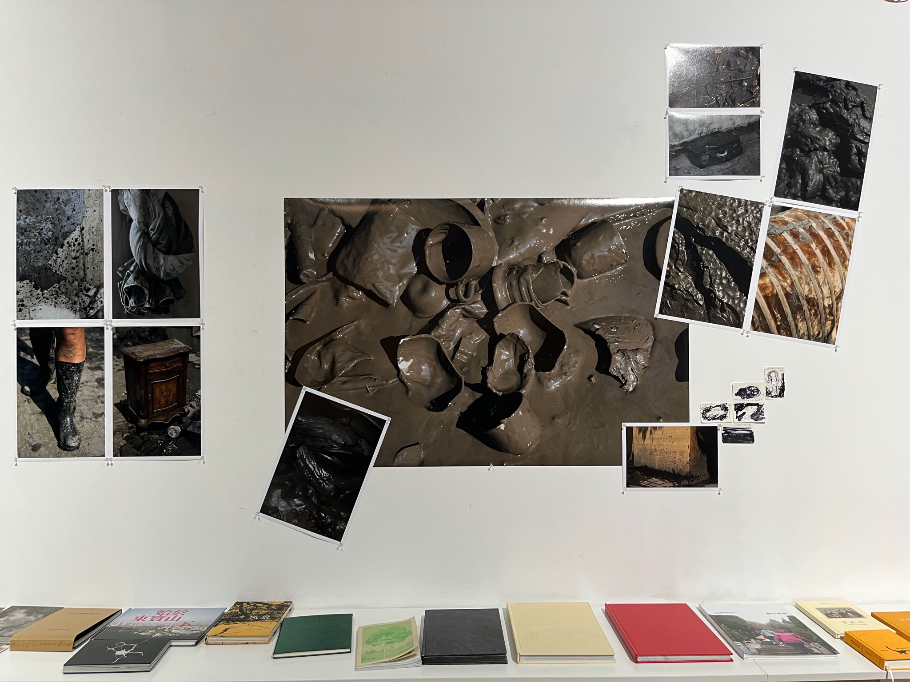
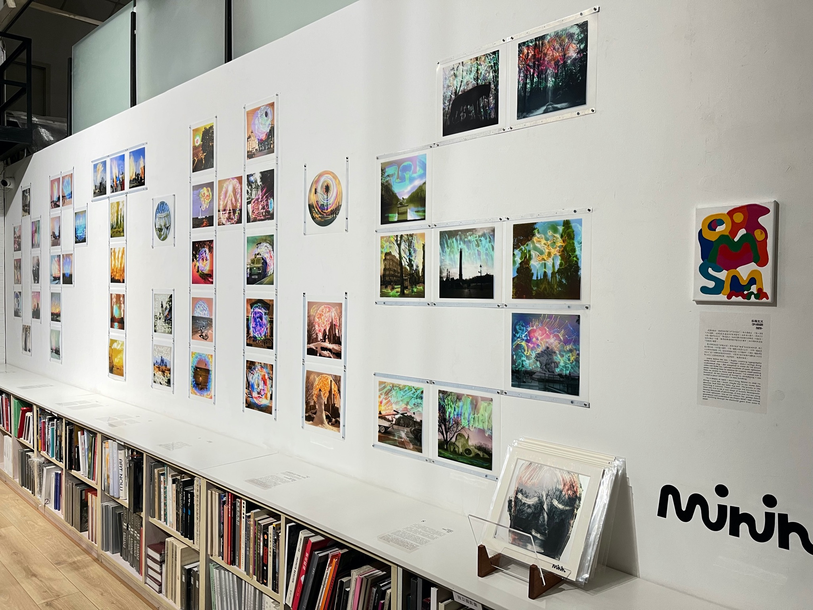
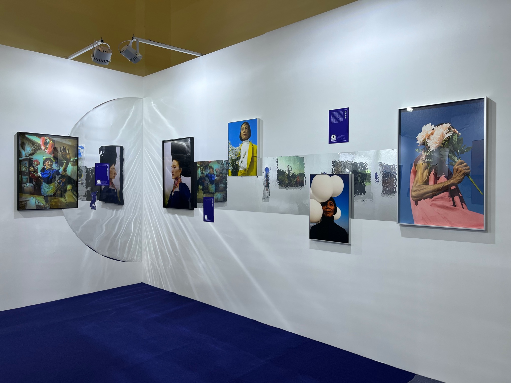
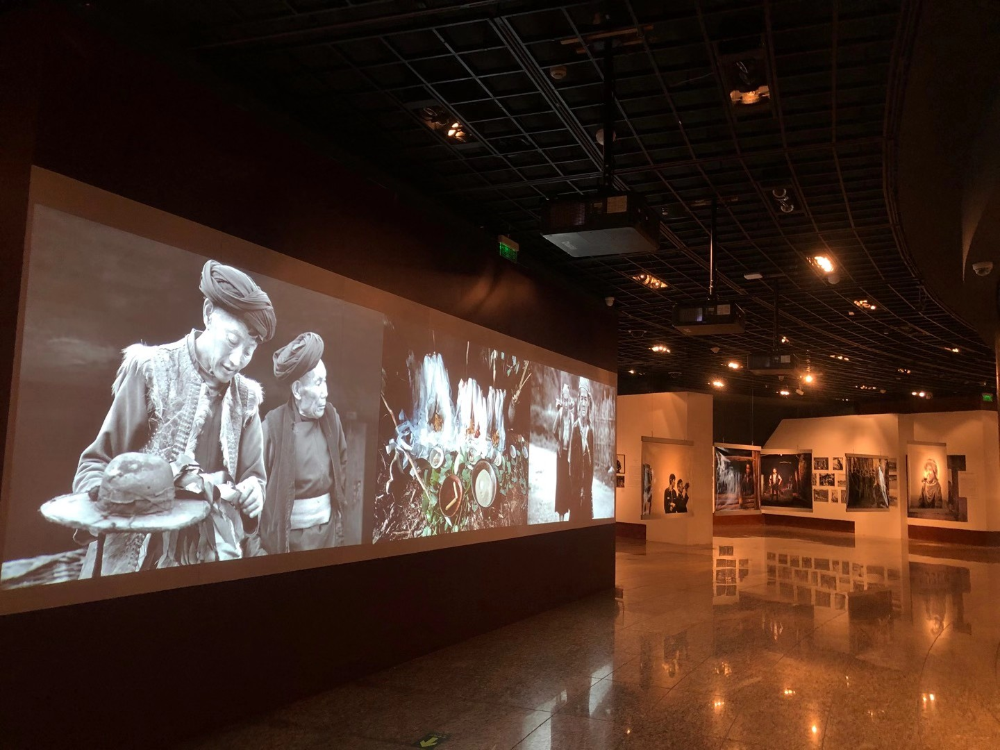
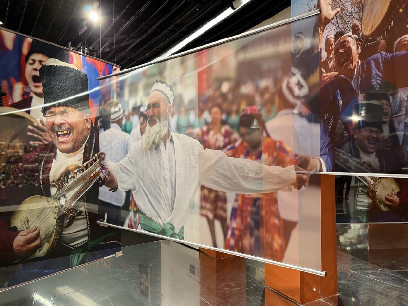
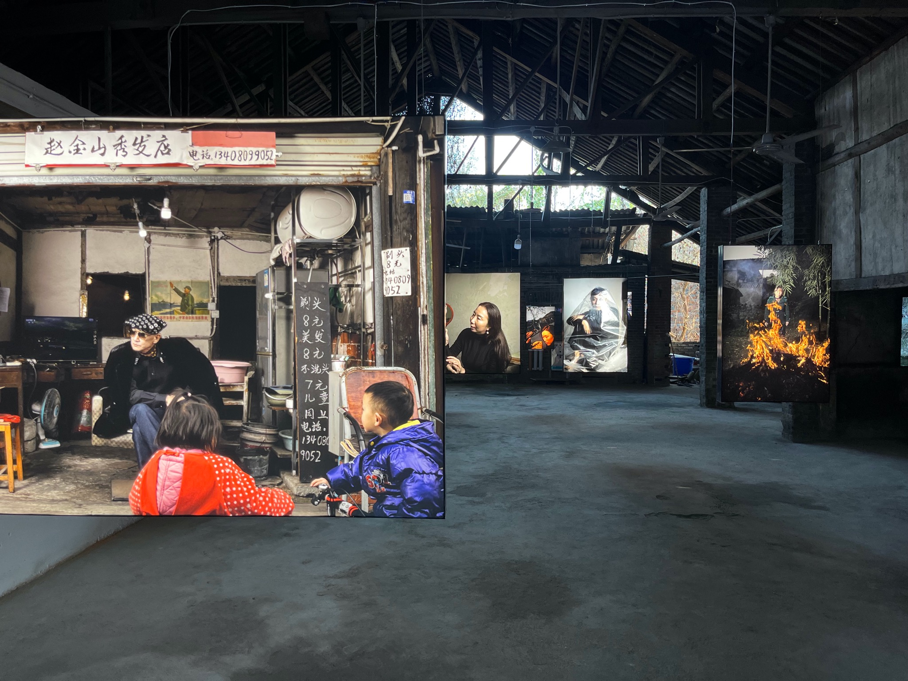

Projects
Selected curatorial and exhibition-making projects across contemporary art, lens-based media and visual ethnography.
01
Project EV+1
Role Curator
Initiated at Inter Art Center in Beijing in 2022 as a small-scale, flexible exhibition series supporting emerging artists and established practitioners testing unconventional approaches. Both a debut platform and an experimental space, the series has presented work addressing socially and politically resonant subjects including the legacies of one-child policy, youth subcultures under pandemic regulation, hidden consequences of large-scale urbanisation, institutional responses to disaster, war and social transformation.
View Project EV+1

Project introduction · 02
Its deliberately modest scale has also enabled works that might struggle to enter larger institutional exhibitions to find a public context. Participating artists have included self-taught practitioners, emerging photographers and an artist displaced by the war in Ukraine.
So far, several photographers have gained subsequent commercial collaborations, exhibition opportunities, and sales through this project.

02
Photography Collection from Douyin Art
Role Co-Curator
A group exhibition bridging Douyin-based practitioners and the institutional art world, bringing emerging forms of platform-based visual practice into contexts of artistic recognition and collection.


03
Chinese Visual Ethnographic Photo Biennale
Role Exhibition Designer
A major visual ethnography initiative of the Chinese National Museum of Ethnology, foregrounding sustained cultural engagement and the documentary and archival value of photography in preserving collective memory and social history.

04
The Power of Images: The 50th Anniversary Exhibition of Greenpeace
Role Exhibition Designer
An archival exhibition examining five decades of Greenpeace activism through visual culture, highlighting photography’s role in documenting, communicating and sustaining environmental movements across global and Chinese contexts.

05
Small Town Adventure
Role Co-Curator
A 7-day intensive photography residency in which 7 photographers from different generations and artistic backgrounds researched, created and exhibited new work on-site, with the entire process livestreamed.
